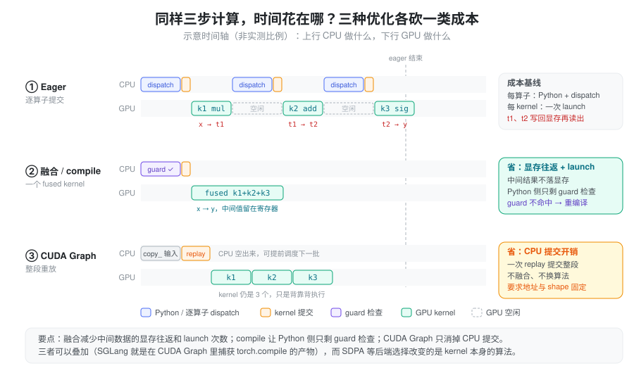
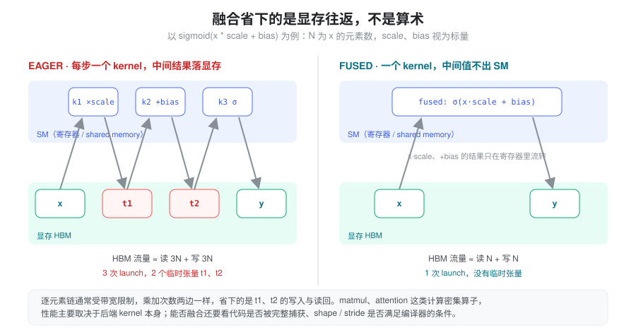
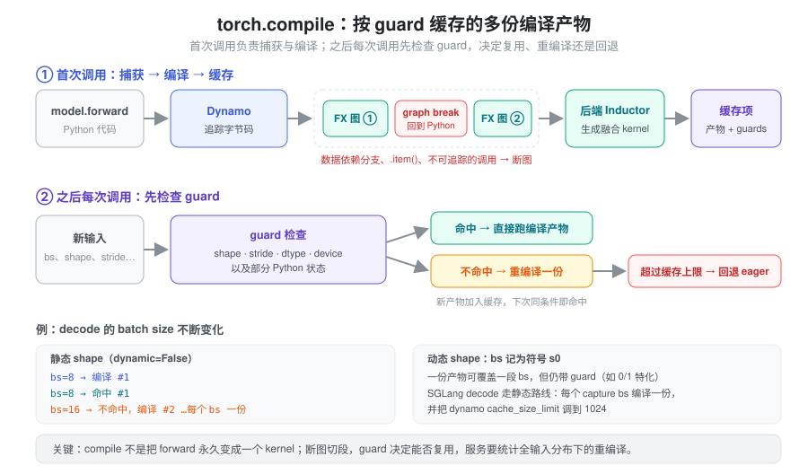

torch.sigmoid(x * scale + bias)只有一行，为什么 profiler 里是三个 kernel、两个临时张量？- 开了
torch.compile首次请求慢得离谱，换个 batch size 又慢一次——编译不是“一次就好”吗？ - CUDA Graph 和
torch.compile都号称“加速 decode”，它们省的是同一样东西吗？
这些问题的共同根源是：Python 代码描述的是计算的语义，GPU 实际执行的是另一回事。 同一条 Torch 表达式，在不同设备、dtype、shape、stride 或编译状态下，可能走不同执行路径。阅读推理代码时，API 告诉我们算什么；判断性能还需要观察实际 kernel、临时数据与 CPU 提交成本。
抽象：语义、分派、kernel 三层，以及三类成本
把一次调用拆成三层来看：
- 语义层：
x * scale、F.scaled_dot_product_attention(...)规定结果是什么； - 分派层：Python 解释执行、dispatcher 按 device/dtype/layout 选算子实现、SDPA 这类接口再挑后端；
- kernel 层：真正提交给 GPU 的 kernel，以及它们读写显存的方式。
性能损耗也相应地落在三处：中间结果在显存里来回搬（kernel
层）、Python 与逐算子分派的 CPU
开销（分派层）、每个 kernel
一次的提交开销（CPU→GPU
边界）。几种常见优化各自只砍其中一类——融合减少显存往返和
launch 次数，torch.compile 让 Python 侧只剩
guard 检查，CUDA Graph 把整段提交压缩成一次
replay，后端选择则换掉 kernel 本身的算法。

这张图的意义在于给出判据：先确认瓶颈落在哪一类成本上，再选对应手段。对一个 GPU 已经满载的长 matmul 开 CUDA Graph，几乎不会有收益；对一串 CPU 提交跟不上的小 kernel 换 attention 后端，也解决不了问题。
表达式、算子和 kernel 不是一一对应
def pointwise(x, scale, bias):
return torch.sigmoid(x * scale + bias)在普通 eager 执行中，这段代码通常由多个算子完成，产生中间结果，并分别提交工作。编译器在条件允许时可以融合逐元素计算，减少中间结果写入与 kernel launch。

关键在于：逐元素链的乘加次数在融合前后一样，省下的是
t1、t2
写回显存再读出的流量。
这类计算通常受带宽限制，所以减少 HBM
往返就是主要收益；matmul、attention
这类计算密集算子则主要取决于后端 kernel 本身。
反过来，一个高层算子也可能调用多个
kernel，或者为了适配布局先复制再计算；view()
等元数据操作甚至可能没有计算 kernel。不要用 Python
代码行数估计 GPU 工作量。编译过程见 Dynamo
Core Concepts。
性能问题可以按证据区分为：
| 现象 | 应优先检查 |
|---|---|
| GPU kernel 之间有明显空隙 | CPU 调度、提交开销、同步等待 |
| 大量短逐元素 kernel 和临时张量 | 融合机会、重复类型转换与复制 |
| 长时间 matmul 或 attention kernel | shape、dtype、后端、计算与带宽效率 |
| 特定 batch/长度突然变慢 | 后端切换、重编译、padding 与 workspace |
具体瓶颈应由 profiler 和对照测量确认，不能一概把 decode 归为某一种瓶颈。
SDPA：统一接口后面有多个后端
scaled_dot_product_attention()
可根据输入和环境选择 FlashAttention、memory-efficient
attention 或 math 等实现。可用性取决于设备、dtype、head
dimension、mask、布局及版本；同一 API
不保证每次走同一后端。这是“分派层”最典型的例子：语义不变，算法换了。
排查时可以用 sdpa_kernel()
限定后端，确认目标路径是否可用：
from torch.nn.attention import SDPBackend, sdpa_kernel
import torch.nn.functional as F
# q、k、v 由调用方提供；若不满足后端约束，可能告警或报错
with sdpa_kernel(backends=[SDPBackend.FLASH_ATTENTION]):
out = F.scaled_dot_product_attention(q, k, v, dropout_p=0.0)限定后端适合诊断和可控场景，不应跳过数值、shape 范围和性能验证就全局强制。支持的后端与输入约束见 SDPA 官方文档。
接口语义也需要核对：SDPA 布尔 attn_mask 中
True 表示允许参与 attention，而
MultiheadAttention.key_padding_mask 中
True 表示忽略该位置。对于 cache decode，query
和 key 长度不等时，还需要确认 is_causal
的对齐方式；不能把任意非方阵场景都当成所需的“右下角对齐”因果
mask。该接口默认非方阵 causal bias 为左上对齐，构造 mask
时要匹配真实位置关系。细节同见上述文档。
SGLang 的
layers/attention/torch_native_backend.py（TorchNativeAttnBackend，直接调用
SDPA 的后端）给出了两种处理：decode 路径每个请求只有一个新
query，它本来就能看到全部历史 KV，所以默认
causal=False；extend
路径（_run_sdpa_forward_extend）则对每个请求先
torch.empty 出长度等于 KV 长度的 query
缓冲区，把真实 query 写到 [prefix_len:]
位置，再以方阵调用 SDPA 并设置
is_causal，这样左上对齐与真实位置就一致了；代价是前缀位置的冗余计算。它同时用
k_cache[per_req_tokens] 逐请求 gather
K/V——高级索引读取会产生副本（见 广播与索引），加上按请求的
Python 循环，源码注释自己也写着 “Need optimize the
performance
later”——它适合做对照与兜底，而不是高性能路径。
torch.compile：捕获、guard 与重编译
torch.compile()
尝试捕获可编译的计算图，再由后端生成优化实现。它不是把任意
Python forward 永久编译成一个固定
kernel，更准确的心智模型是：一个按 guard
索引的编译产物缓存。

- graph break：遇到不能捕获的代码时，默认可回到 Python 执行，再继续捕获下一段图，跨段优化受限。
- guard：已编译结果带有适用条件，可能包括输入 shape、stride、dtype、device 和部分 Python 状态。
- recompile：条件不满足时，可能重新编译一个适用版本；动态形状能减少部分 shape 变化引起的重编译，但不能解决所有 guard 变化。超过缓存上限后会回退到 eager。
数据依赖的 Python 分支、主机标量读取和自定义函数调用，是值得优先排查的区域；具体支持能力随版本演进。见 torch.compile、Dynamic Shapes 和 重编译排查。
在请求 batch、prefill 长度和 decode token
数不断变化的服务中，必须统计整个输入分布，而不只测一个固定
shape。可用
TORCH_LOGS="graph_breaks,recompiles"
辅助定位断图与重复编译。
CUDA Graph：重放命令，与计算融合分别理解
CUDA Graph 将一段 GPU 工作捕获后重复提交，主要减少 CPU 提交开销。它本身不自动把多个 kernel 融合成一个；编译器融合与 graph replay 可以互相配合——前者改变“有哪些 kernel”，后者改变“怎么把它们交给 GPU”。
手工捕获的图通常要求重放时使用稳定的地址和适用的形状。典型模式是先分配固定缓冲区，每次把新内容写入缓冲区，再 replay；不能只把 Python 变量重新绑定到另一个张量，就认为图会读取新地址。
不同输入规模可以通过分桶和 padding 适配，但需要屏蔽无效位置，并计入额外计算与常驻显存。多份图、私有内存池和静态缓冲区也可能提高占用。更详细的捕获与重放原理见 Cuda Graph 和 PyTorch CUDA Graphs。
compile 产物被装进 CUDA Graph
SGLang 的 decode
路径把上面几层叠在一起，读代码时可以对照三类成本（基于
python/sglang/srt/ 当前代码）：
- 分桶捕获。
model_executor/runner/base_cuda_graph_runner.py的get_batch_sizes_to_capture()算出要捕获的 batch size 列表capture_bs；运行时_pad_to_bucket()用bisect_left把真实 batch 向上补到最近的桶，超过最大桶的 batch 由can_run_graph()拒绝、回退非 graph 路径。 - 静态缓冲区 +
copy_。DecodeCudaGraphRunner（model_executor/runner/decode_cuda_graph_runner.py）replay 前执行self.buffers.input_ids[: self.raw_num_token].copy_(forward_batch.input_ids)、positions同理——正是“写入固定地址，而不是换绑变量”。 - compile 是可选的一层。
--enable-torch-compile（server_args.py，标注为实验特性，默认关闭）打开后，只对不超过--torch-compile-max-bs（默认 32）的桶编译，即compile_bs。capture()对每个桶进入compilation/torch_compile_decoration.py的patch_model()：命中compile_bs时返回torch.compile(torch.no_grad()(model.forward), mode=..., dynamic=...)，否则返回原model.forward，然后再交给 CUDA Graph 捕获。 - 静态 shape、放宽缓存。 CUDA 上
dynamic为 False（只有 HIP 且设置SGLANG_TORCH_DYNAMIC_SHAPE时为动态），每个桶各编译一份；set_torch_compile_config()因此把 dynamo 的cache_size_limit调到 1024，避免桶多时触发上限回退。默认mode是max-autotune-no-cudagraphs（可由SGLANG_TORCH_COMPILE_MODE覆盖），即不让 Inductor 自己再套 CUDA Graph，graph 统一由 runner 捕获。
所以开启 compile 后启动变慢、显存占用变化，是“桶数 × 编译 + 捕获”的一次性成本；稳定运行时，每步 decode 只剩拷入输入和一次 replay。
验证顺序：正确性、冷启动、稳定运行
- 固定输入，比较 eager 与优化路径的数值输出、mask 和 KV cache 更新。
- 分别记录编译、预热和 capture 成本，避免混入稳定吞吐。
- 覆盖真实 batch、序列长度、dtype 与布局范围，观察断图和重编译。
- 使用 profiler 检查实际 kernel 数量、复制和同步；计时方式见 CUDA 异步执行。
- 同时记录延迟、吞吐和峰值显存，判断收益是否适合实际服务。
小结
Python 表达式只规定语义；实际成本由分派路径和最终 kernel
决定。把损耗拆成“显存往返、Python/分派开销、kernel
提交开销、算法本身”四类，就能对上手段：融合减少中间数据与部分提交，torch.compile
用 guard 缓存换掉 Python 解释，CUDA Graph
减少重复提交，后端选择改变算法路径。它们解决的问题不同、可以叠加（SGLang
decode 正是 compile 产物装进 CUDA
Graph），收益也需要分别验证：图捕获了什么、后端执行了什么、数据如何流动。